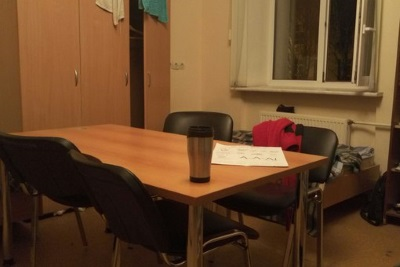

Общежитие Сколько теплых воспоминаний способно возродить в душе каждого, кто прожил здесь достаточно много, такое одно лишь слово, но в данной статье мы попытаемся развеять мифы об общежитии, которые могут быть у поступающих сюда.
- Общага ужасно грязная?
Реакция большинства на слово "общага" строго отрицательная, ведь на ум обычно приходят слухи об армиях тараканов, ужасных условиях жизни, плесени в душевых и прочих ужасах. Возможно в СУНЦе вас отпугивает именно этот ужасающий образ общаги. На самом деле, этот миф достаточно прост, СУНЦ — не идеальное место для жизни, где будет абсолютно все и в достатке, но при этом все необходимое для жизни у вас будет, а если чего-то не хватает, то можно и с собой привезти. Тараканов или же других насекомых за два года почти не замечал, так что уверяю, с этим проблем в СУНЦе нет.
- Воровство в общаге
Этот миф достаточно сильно распространен, но при этом, в СУНЦе вы можете не волноваться ни о чем, за два года я слышал лишь об одном случае, да и тот был решен достаточно быстро и радикально(отчисление вора), в плюс ко всему, после того, как поставили камеры, вероятность быть обворованным уменьшается, так что этот миф имеет очень мало общего с реальностью, вы можете не бояться.
- Тотальный контроль за вашими действиями.
Как человек, проживший здесь два года, могу сказать, что контроль в СУНЦе реализован крайне слабо. Да, вы можете получить выговор, но при этом смотреть за каждым вашим шагом и ограждать вас от всего опасного никто не собирается.